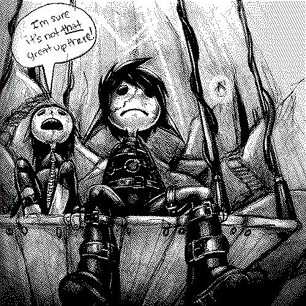
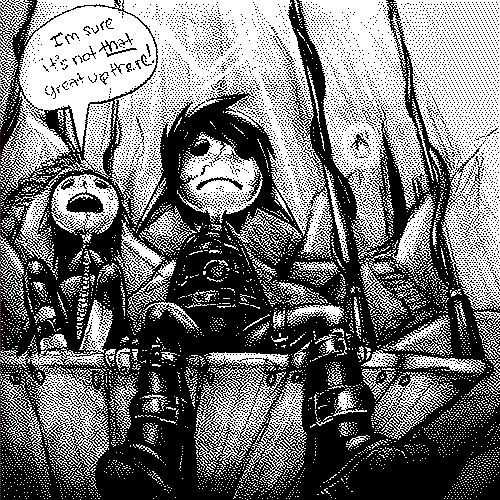
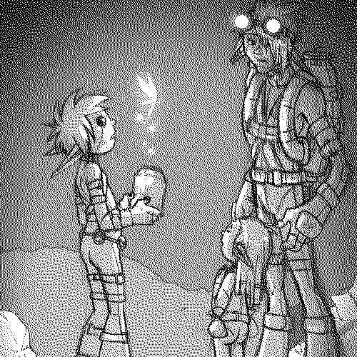
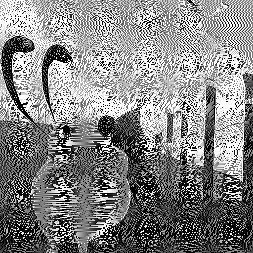
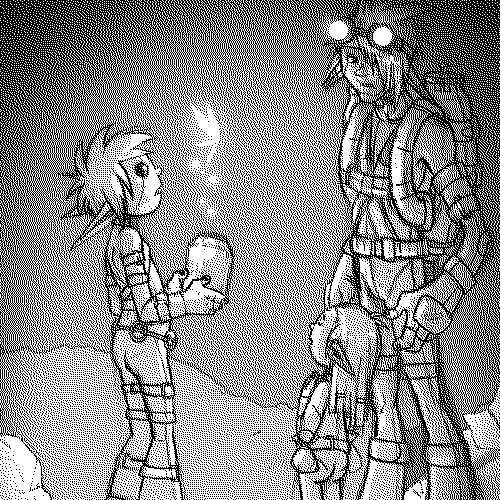
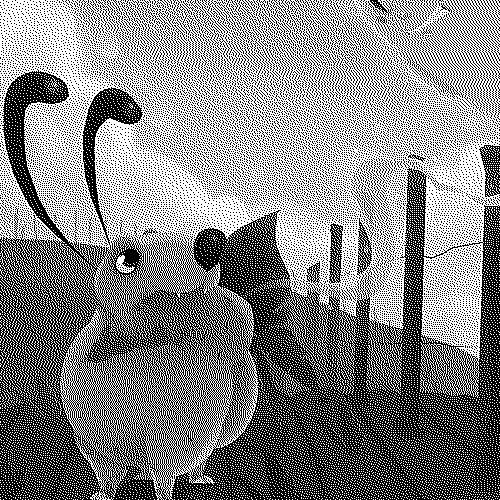

About
About Projects
Projects Books
Books Games
Games Stories
Stories Store
Store Notes
Notes How-to
How-to
Wiktopher follows the story of Lupen and Eka as they sandfin across the Soronan Desert and learn about the varied lives of its inhabitants. The book features illustrations of creatures, plants, maps and languages of the different cultures of its world. Themes include cultural identity, food preservation, community, low-tech and more.
The featured conlangs include ilken, terat, aodan, and finic.
It was written while circumnavigating the Pacific Ocean by sail, and over many summers in the Salish Sea. It was written by Rek Bell, and edited by Devine Lu Linvega. The writing should be appropriate for children of 10 and up.
Paperback

Wiktopher is a 237 page-long paperback book, written in English. It is in black and white, and measures 5.83 x 8.27 in / 148 x 210 mm.
The book has a matte cover, and is sold for:
$13.51 USD, €12.42, $20.29 AUD, £10.52 & $20.17 CAD
E-book

Wiktopher is formatted for most e-readers (EPUB, mobi and PDF).
BUY WIKTOPHER E-BOOK$5.00 USD
Production story
The story of Wiktopher is an elaboration of a short film I did in 2008 called uno. This project was supposed to expand into a short comic[PDF, 679.8 KB], which included many of the Wiktopher characters like Eka, Uno, Zukka, Lupen and Ten.
I produced a lot of exploratory art for the project but the comic was never completed.

 

 



I began writing a story with those same characters while in Tahihi, french polynesia in 2017. Because of laptop problems, drawing using heavy software like Photoshop was near impossible, and so we were forced to consider other hobbies. The story is inspired from our own travels and discoveries.
I decided to make the book gender neutral, namely because I am "gender agnostic", but also because I thrive with constraints. It's not something I've seen done often, and it happens to work well with the Wiktopher universe(which is quite alien).
The writing of the book was completed on October 2nd 2021, but we finished corrections on November 15th 2023. Devine did a lot of editing for this The book was published digitally on November 25th 2023.
{kind=link}
Pandoc and Tectonic were used to convert Markdown(main text is written in Markdown) and TeX files into PDF files, and to generate an EPUB. A mobi file was generated from the EPUB file using Calibre. Disclaimer: Rek doesn't master the use of TeX(but their skills get better with every published book, this is Rek's second book produced with TeX and Pandoc), there are probably better ways to produce a book, reference the project's source files at your own risk.


Related pages: stories, uno, terat, aodan, finic, and ilken.